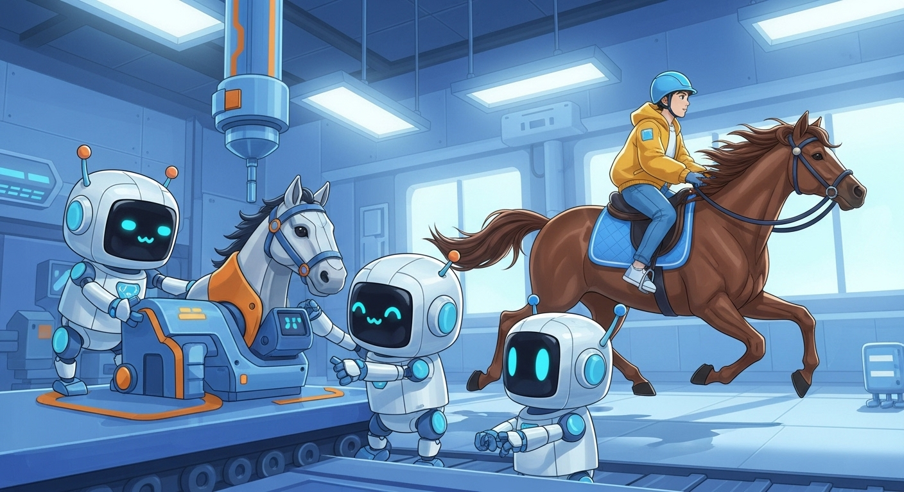
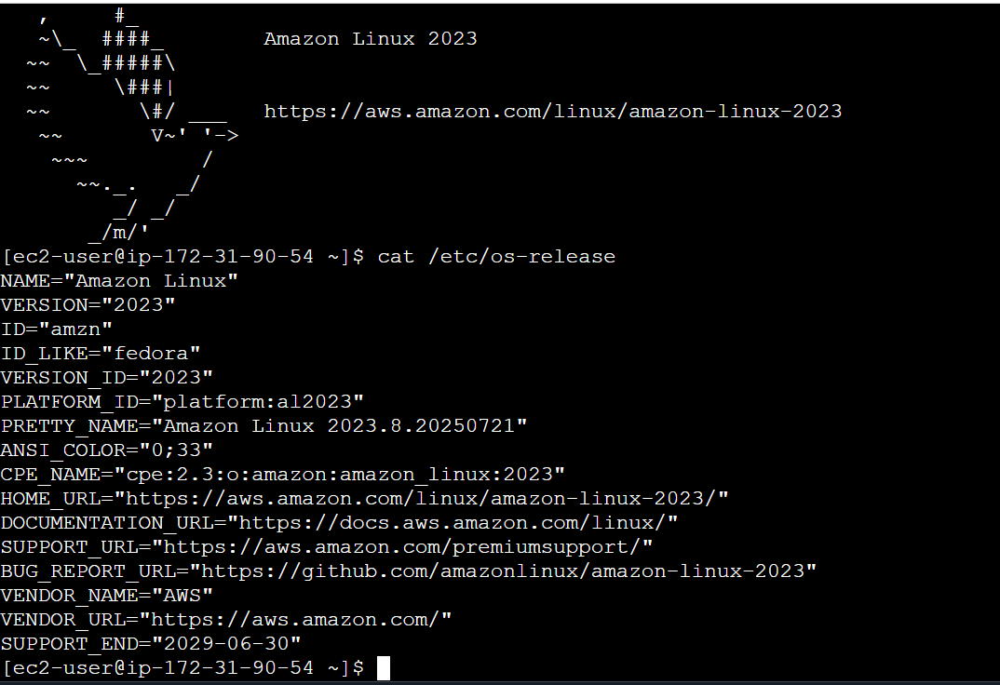
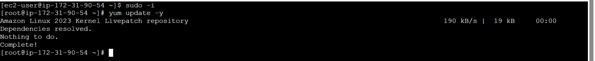
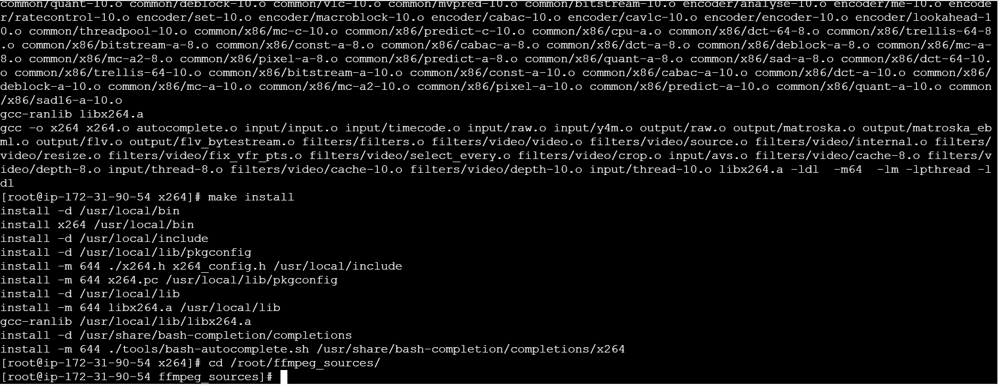

The Horse in Motion and FFmpeg Gotchas - Part 3 Building FFmpeg From Scratch

Introduction: The Final Frontier
In Part 1, we mastered the basics of FFmpeg in a friendly Colab environment. In Part 2, we took our code to the cloud, navigating the world of static builds and Lambda Layers to run our process on AWS. We found a pre-built binary that worked, but it wasn’t perfect. We had to compromise, giving up the high-quality libx264 encoder to get the drawtext filter we needed.
What if you can’t compromise? What if you need a specific combination of features that no public build offers? Or what if the available builds are massive—packed with dozens of codecs and filters you’ll never use—making your Lambda deployment package unnecessarily large?
Welcome to Part 3, where we take the ultimate step: we build FFmpeg ourselves.
Let me start with a serious word of caution. I do not recommend this lightly. Building FFmpeg from source is a journey into a complex world of libraries, dependencies, and cryptic configuration flags. It took me seven or eight attempts to find the right combination of library versions and compile options. You will likely wander into strange dependency rabbit holes and have to start over. Before you go down this path, exhaust all options for pre-built binaries.
But if you must, this guide is for you. By compiling it ourselves, we can create a lean, mean, purpose-built FFmpeg binary that has exactly what we need—libx264 and drawtext—and nothing we don’t. Our final binary will be significantly smaller and perfectly tailored for our AWS Lambda function.
Let’s roll up our sleeves and build the ultimate video processing tool.
The Workshop: Setting Up Our Build Environment
We can’t compile a project as complex as FFmpeg on a small machine or in a standard Lambda environment. We need a proper workshop. For this task, I used an AWS EC2 instance with the following specifications:
- Instance Type:
t3.large(I initially tried at3.microand repeatedly ran into out-of-memory errors during compilation. Save yourself the headache and start with more power). - AMI (Amazon Machine Image): Amazon Linux 2023 (kernel 6.1).
Once your EC2 instance is running and you’ve connected to it via SSH, the first step is to prepare the system for compilation.

First, switch to the root user and update the system packages.

Next, we’ll install a suite of essential development tools and libraries.
yum groupinstall "Development Tools" -y
yum install -y nasm glibc-static expat-static gperf zlib-static cmakeDevelopment Tools: This is a group of packages that includes essentials likegcc,make, and other compilers.nasm: An assembler required byx264.-staticlibraries (glibc-static, etc.): These are crucial for building our self-contained, static binary.cmake: A build tool used by some of the libraries we need, like Brotli.
{kind=link}
{kind=link}
Now, let’s create a dedicated directory to keep all our source code organized.
Finally, we need to tell the system’s package configuration tool (pkg-config) where to find the custom libraries we are about to build. We’ll install them in /usr/local, so we need to add that path.
{kind=link}
This environment variable ensures that when we compile one library, it can find the other libraries it depends on. Our workshop is now ready. It’s time to start forging the components.
The Dependency Gauntlet: Compiling the Libraries
Here comes the most challenging part. FFmpeg relies on external libraries for many of its features. To get a static build with libx264 and drawtext, we need to first compile static versions of all their dependencies. The order matters! We’ll build them from the ground up.
For each library, the pattern will be the same: download the source code, configure the build, compile it, and install it.
1. The Encoder: x264
This is the high-quality H.264 video encoder we had to give up in Part 2. Let’s make it our first priority.
git clone --branch stable --depth 1 https://code.videolan.org/videolan/x264.git
cd x264
./configure --prefix=/usr/local --enable-static --disable-shared --enable-pic
make -j$(nproc)
make install
cd /root/ffmpeg_sources/--prefix=/usr/local: Tells the build to install into our custom directory.--enable-static --disable-shared: This is the key. We instruct it to build only the static library (.afile) and not a shared one (.sofile).--enable-pic: Generates Position-Independent Code, which is required for linking into a static library.make -j$(nproc): Compiles the code using all available CPU cores to speed things up.

2. The Font Rendering Stack
To enable the drawtext filter, we need a whole stack of font-related libraries. We must build them in order of dependency.
A. Compression Libraries: brotli and bzip2
These are low-level dependencies for the font libraries.
# Brotli
wget https://github.com/google/brotli/archive/refs/tags/v1.1.0.tar.gz -O brotli-1.1.0.tar.gz
tar -xzf brotli-1.1.0.tar.gz
cd brotli-1.1.0/
mkdir out && cd out
cmake -DCMAKE_INSTALL_PREFIX=/usr/local -DBUILD_SHARED_LIBS=OFF ..
make -j$(nproc)
make install
cd /root/ffmpeg_sources/
# bzip2
wget https://sourceware.org/pub/bzip2/bzip2-1.0.8.tar.gz
tar -xzf bzip2-1.0.8.tar.gz
cd bzip2-1.0.8/
make -j$(nproc)
make install PREFIX=/usr/local
cd /root/ffmpeg_sources/- Note: Brotli uses
cmakefor its build, where-DBUILD_SHARED_LIBS=OFFachieves our static-only goal.bzip2has a unique makefile, requiring us to specify the install location withPREFIX=/usr/local.
{kind=link}
{kind=link}
B. Image Format: libpng
FreeType, the font engine, needs this to handle certain font formats.
wget https://download.sourceforge.net/libpng/libpng-1.6.40.tar.gz
tar -xzf libpng-1.6.40.tar.gz
cd libpng-1.6.40/
./configure --prefix=/usr/local --enable-static --disable-shared
make -j$(nproc)
make install
cd /root/ffmpeg_sources/{kind=link}
C. The Font Engine: FreeType
This is the core library that actually renders font glyphs from font files.
wget https://download.savannah.gnu.org/releases/freetype/freetype-2.13.2.tar.gz
tar -xzf freetype-2.13.2.tar.gz
cd freetype-2.13.2/
./configure --prefix=/usr/local --enable-static --disable-shared
make -j$(nproc)
make install
cd /root/ffmpeg_sources/{kind=link}
{kind=link}
D. Text Layout Libraries: FriBidi and HarfBuzz
These libraries handle complex text layout, like right-to-left languages and shaping glyphs correctly.
# FriBidi
wget https://github.com/fribidi/fribidi/releases/download/v1.0.13/fribidi-1.0.13.tar.xz
tar -xf fribidi-1.0.13.tar.xz
cd fribidi-1.0.13/
./configure --prefix=/usr/local --enable-static --disable-shared
make -j$(nproc)
make install
cd /root/ffmpeg_sources/
# HarfBuzz
wget https://github.com/harfbuzz/harfbuzz/releases/download/8.2.1/harfbuzz-8.2.1.tar.xz
tar -xf harfbuzz-8.2.1.tar.xz
cd harfbuzz-8.2.1/
LIBS="-lbrotlidec -lbrotlicommon" ./configure --prefix=/usr/local --enable-static --disable-shared --with-freetype=yes
make -j$(nproc)
make install
cd /root/ffmpeg_sources/- Note: The
LIBS="..."part for HarfBuzz is a crucial fix, explicitly telling it how to link with the Brotli libraries we just built.
{kind=link}
{kind=link}
E. Font Management: Fontconfig
This is the high-level library that finds and manages the fonts on a system. It’s the final piece of our font stack.
wget https://www.freedesktop.org/software/fontconfig/release/fontconfig-2.14.2.tar.xz
tar -xf fontconfig-2.14.2.tar.xz
cd fontconfig-2.14.2/
LIBS="-lbrotlidec -lbrotlicommon" ./configure --prefix=/usr/local --enable-static --disable-shared
make -j$(nproc)
make install
cd /root/ffmpeg_sources/{kind=link}
Phew! The dependency gauntlet is complete. All the components are forged and installed in /usr/local. Now for the main event.
The Main Event: Compiling Our Custom FFmpeg
With all our dependencies in place, we can finally configure and compile FFmpeg itself.
First, let’s clone a recent, stable version of the FFmpeg source code.
Now, we construct the master command. This ./configure script tells FFmpeg exactly how we want it to be built. Every flag matters.
./configure \
--prefix="/usr/local" \
--pkg-config-flags="--static" \
--extra-cflags="-I/usr/local/include" \
--extra-ldflags="-L/usr/local/lib -static" \
--extra-libs="-lpthread -lm" \
--bindir="/output" \
--enable-gpl \
--enable-static \
--disable-shared \
--enable-libx264 \
--enable-libfreetype \
--enable-libfontconfig \
--enable-libfribidi \
--enable-libharfbuzzLet’s break this down:
--prefix="/usr/local"&--bindir="/output": Defines where to install the libraries (/usr/local) and the final executable (/output).--pkg-config-flags="--static": The secret sauce. This tellspkg-configto provide the flags needed for static linking against all our dependencies.--extra-cflags="-I/..."&--extra-ldflags="-L/...": These explicitly tell the compiler and linker where to find the header files (.h) and library files (.a) in our custom install directory. The-staticflag inldflagsreinforces our goal.--enable-gpl&--enable-libx264:libx264is licensed under the GPL, so we must enable GPL compatibility to use it.--enable-static --disable-shared: The core instruction to build a single, self-contained binary.--enable-lib...: This is where we flip the switch for each external library we painstakingly compiled. We are explicitly enablinglibx264and the entire font stack.
{kind=link}
With the configuration set, it’s time to build and install.
{kind=link}
{kind=link}
After a few minutes, if all went well, our custom-built ffmpeg binary will be waiting for us in the /output directory.
{kind=link}
The Moment of Truth: Verification
Did it actually work? Let’s run a series of checks to verify our new binary.
First, check its dependencies with ldd. A statically linked executable should have no dynamic dependencies.
The expected output should be:
{kind=link}
This is a perfect result. It means our binary is completely self-contained and portable—ideal for a Lambda Layer.
In one of my failed attempts I did not enable the static build flags correctly, and the output showed dynamic dependencies. If you see any lines with =>, it means your binary is not fully static. You must go back and ensure all libraries are built with the --enable-static --disable-shared flags. Builds that have dynamic dependencies will not work in a Lambda Layer, as they require the underlying libraries to be present in the Lambda environment.
{kind=link}
Next, check the version and configuration.
The output should show our custom configuration flags right at the top, confirming our build options were respected. You should see --enable-gpl, --enable-libx264, --enable-libfreetype, etc.
{kind=link}
Now, let’s confirm both of our target features are present.
# Check for the drawtext filter
/output/ffmpeg -filters | grep drawtext
# Check for the libx264 codec
/output/ffmpeg -codecs | grep libx264Both of these commands should return a result, proving that we have successfully built a single binary with both features enabled.
{kind=link}
{kind=link}
Finally, let’s check the size.
You’ll likely see a file size around 25-30 MB. Compare this to the 80-100+ MB of the general-purpose static builds we downloaded in Part 2. Our custom build is significantly smaller, which means faster Lambda cold starts and smaller deployment packages.
{kind=link}
Putting Our Custom Binary to Work: The Final Deployment
We’ve successfully compiled and verified our bespoke ffmpeg binary on our EC2 instance. Now for the final, crucial step: packaging it as a Lambda Layer and deploying it to our serverless application. This will be very similar to the process in Part 2, but with our new, superior binary.
Step 1: Package the New Lambda Layer
We’ll package it into a new Lambda Layer zip file. It’s good practice to give it a new name to avoid confusion with the layer from Part 2.
# Create the directory structure for our custom layer
mkdir -p custom-ffmpeg-layer/bin
# Copy our newly downloaded ffmpeg binary into it
cp ./ffmpeg custom-ffmpeg-layer/bin/
# Create the zip archive
cd custom-ffmpeg-layer
zip -r ../custom-ffmpeg-layer.zip .
cd ..You should now have a custom-ffmpeg-layer.zip file by now. Let’s check the layer size as well.
{kind=link}
You’ll likely see a file size around 10-15 MB. Compare this to the 80-100+ MB of the general-purpose static builds we downloaded in Part 2. Our custom build is significantly smaller, which means faster Lambda cold starts and smaller deployment packages.
Step 2: Update the SAM Template
Next, we’ll edit our template.yaml to point to this new layer. The only change required is updating the ContentUri of our FFmpegLayer resource.
# In template.yaml
...
# Define the Lambda Layer
FFmpegLayer:
Type: AWS::Serverless::LayerVersion
Properties:
LayerName: custom-ffmpeg-layer
Description: Custom FFmpeg build with libx264 and drawtext
ContentUri: layers/custom-ffmpeg-layer.zip # Points to our local zip file
CompatibleRuntimes:
- python3.12
- python3.13
...Step 3: Update the Lambda Function Code (The Payoff!)
This is the moment we’ve been working towards. We can now update our src/app.py to use the high-quality libx264 encoder. This is the one-line change that makes this entire effort worthwhile.
# In src/app.py
...
# When a layer is used, its contents are available in the /opt directory.
# Our FFmpeg binary is therefore at /opt/bin/ffmpeg.
ffmpeg_cmd = [
"/opt/bin/ffmpeg",
"-stream_loop",
"-1",
"-framerate",
"1.5",
"-i",
input_path,
"-vf",
f"drawtext=fontfile={font_file}:text='The Horse in Motion and FFmpeg Gotchas Part 3':fontcolor=white:fontsize=13:box=1:boxcolor=black@0.8:boxborderw=5:x=(w-text_w)/2:y=(h-text_h)/2:enable='between(t,0,10)'",
"-c:v",
"libx264", # THE PAYOFF: We can now use the superior encoder!
"-r",
"30",
"-pix_fmt",
"yuv420p",
"-t",
"40",
output_path,
]
...No other changes to the Python code are necessary.
Step 4: Deploy and Test
With our new layer and updated code, we’re ready for the final deployment. Run the standard SAM commands from your project’s root directory:
After the deployment completes, invoke your Lambda function one last time. Check the CloudWatch logs, and you should see the FFmpeg command execute successfully. Then, head over to your S3 bucket. You will find a new horse-in-motion.mp4 file, created by your very own, custom-built, highly-optimized FFmpeg binary, running live in the cloud!
Here is final video output:
All the code for this post till this point is available in the Github repo horse-in-motion-ffmpeg-gotchas-part-2 (3e9eb)
Conclusion: From User to Builder
Our serverless journey is complete. We’ve gone from a user of FFmpeg to a builder, crafting a tool perfectly suited to our needs. While this path is fraught with challenges, it provides the ultimate level of control, optimization, and capability.
By successfully compiling and deploying our own FFmpeg binary, we’ve achieved the best of all worlds:
- Targeted Functionality: We have a build with both the high-quality
libx264encoder and the essentialdrawtextfilter. - Optimized Size: Our final binary is significantly smaller than general-purpose public builds, leading to faster Lambda deployments and cold starts.
- Ultimate Control: We are no longer at the mercy of third-party build configurations. If a new library or feature is needed, we now have the blueprint to build it ourselves.
This three-part series has shown that while FFmpeg can be intimidating, breaking it down step-by-step—from basic commands to cloud deployment and finally to building it from source—can demystify this incredibly powerful tool. You are now equipped to handle almost any multimedia processing challenge that comes your way.